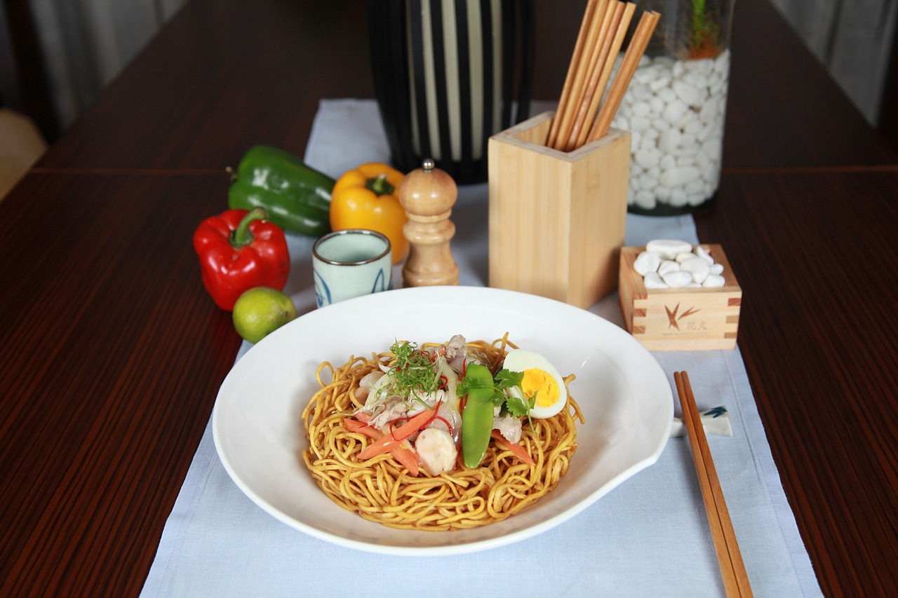
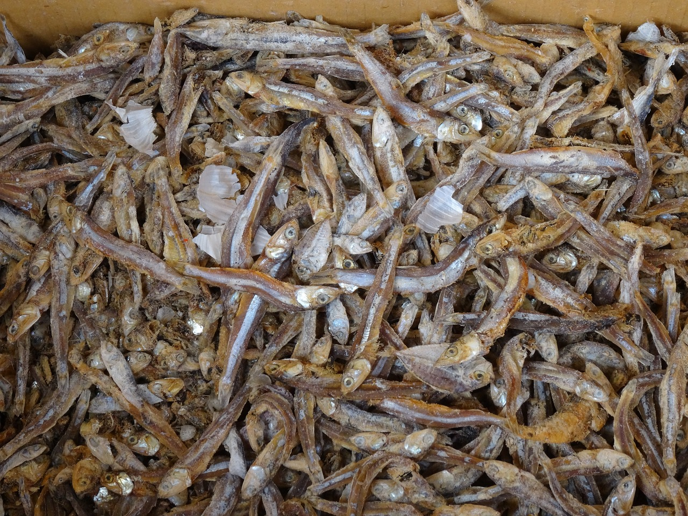
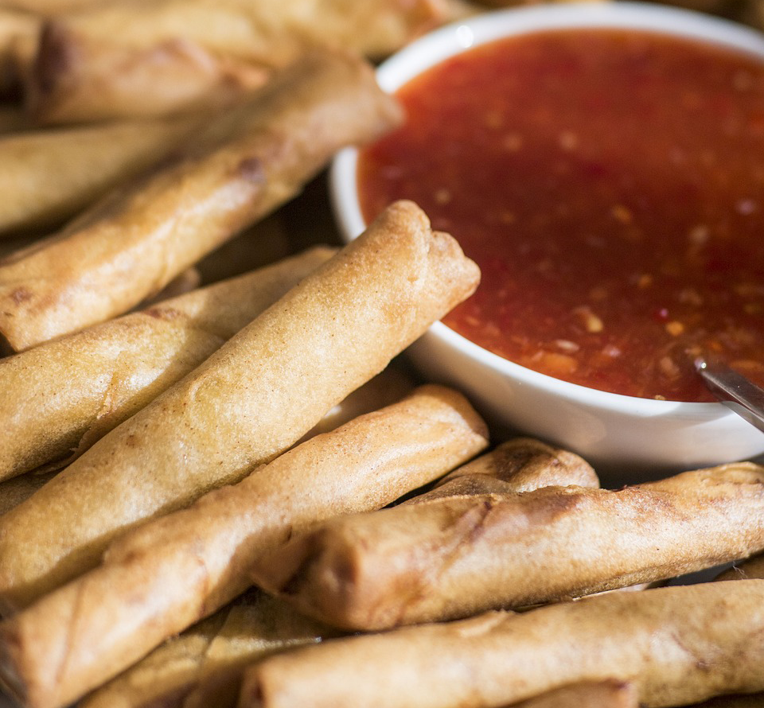
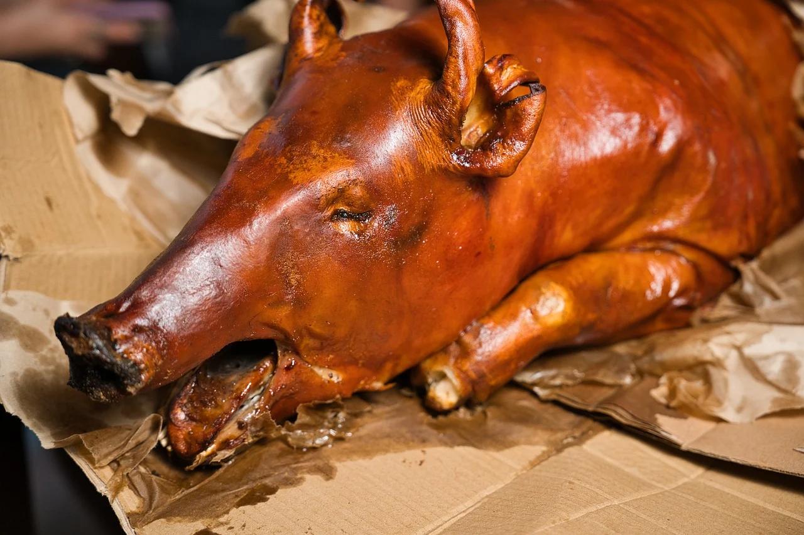
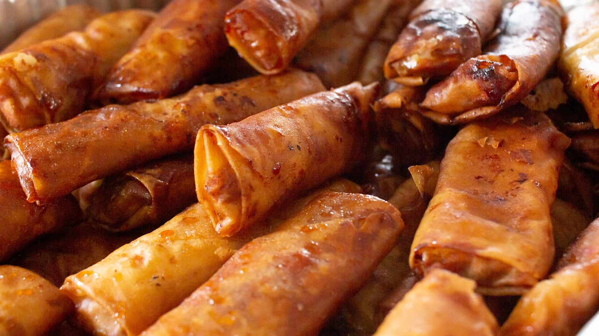
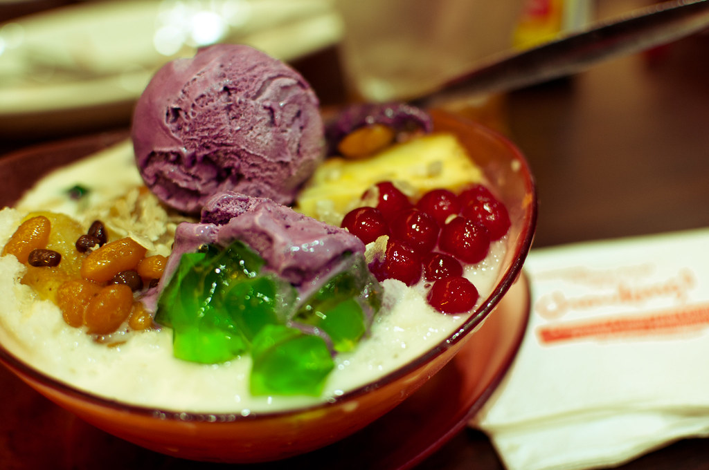

One must always remember: Food is a necessity for everyone! And the food available depends on the country and culture, and the Philippines is no exception. Just as anywhere else, the Filipino food is different, and delicious in it's own way! It's also a huge part of it's culture. Thats why we'll be taking a look at some amazing dishes and foods found in the Philippines!
Proper meals
These consists of something you would eat for defeating hunger on a normal basis. Like your breakfasts, lunches and dinners. Usually salt food. Keep in mind that mode of preparation depends on the chef.

Rice
Altough the rice is always used alongside something else, rice is just that important that it has to be mentioned. Basically everyone who is either in the Philippines, is Filipino, or Asian in general, eat rice all the time. Something I have heard once goes as follows: Rice is Life. Take this from someone who is Filipino themselves, It's true.

Pancit/Pansit
Pancit, or pansit, is just the general term for noodles, which can refer to any traditional noodle dish in Filipino cuisine. The types of pancit are many, usually named after the type of noodle or ingredient, place of origin or method of preparation. This is common as a side dish.

Bulad
Daing, tuyo, buwad, bulad, or bilad, is virtually any fish which is salted and sun-dried with either a crispy (best version), or soft texture after being fried or grilled. Commenly eaten with rice and vinegar dip.

Lumpia
Normally a ground-pork and vegetable mix wrapped in a lumpia wrapper and fried, is what makes up this Filipino spring roll. Best served and eaten with a sweet and spicy dipping sauce.

Lechon
Lechon baboy, also just called lechon, is a stuffed whole pig spit-roasted over charcoal, giving it a nice and crispy outer texture of skin, and tough and juicy inner meat. If there is lechon on the table at any party, it means there is a blowout celebration on the works! These festivities can consist of weddings, reunions and milestone birthday parties.
Snacks and Desserts
From a quick bite while watching movies, or to defeat the munchies, to a clencher of thine sweet tooth, usually presented after a parties main course, snacks and desserts come in many different shapes and sizes, tastes and textures! Here we'll go through some of them.

Pandesal
A small, round, bread bun with sprinkled bread crumbs on top. Just a nice and simple quick solution to put an end to the munchies, nothing special, just a classic.

Turon
A banana rolled in brown sugar, wrapped in a lumpia wrapper, fried, and coated with caramel is what the banana turon is. Turon is a common and delicious food found in basically any street market. If you stumble upon this cuisine, it's totaly worth picking up a few!

Halo-halo
Halo-halo is a huge jumble of ingredients like crushed ice, ice cream, milk, coconut, kidney beans, and different kinds of jelly, just to name a few, mixed together into something utterly delectable! Especially considering the heat, this cold dessert is destined to be devoured.